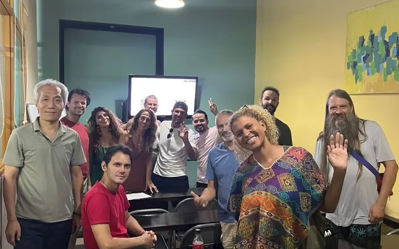
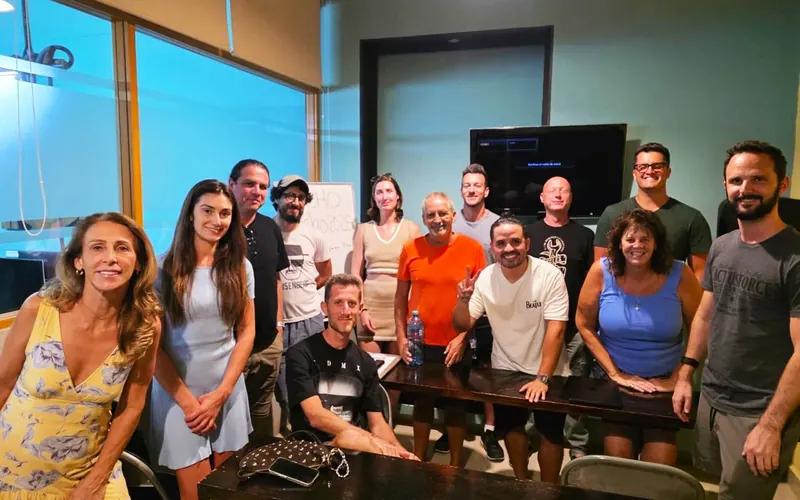
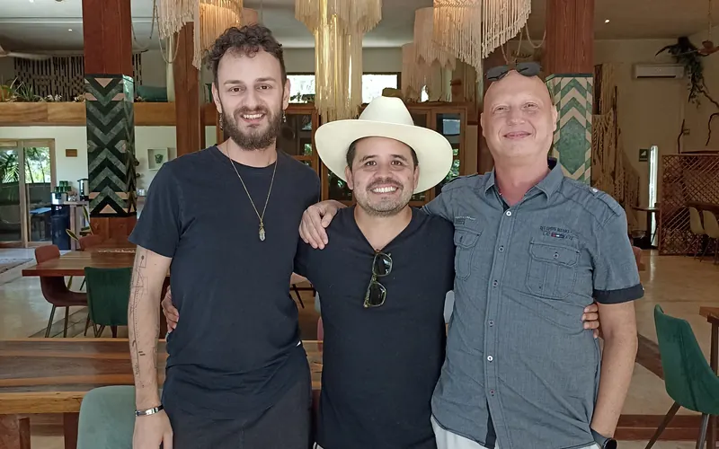

Próximos meetups
Súmate al siguiente encuentro de builders
Reserva tu lugar en LumaEscanea el código y confirma tu RSVP. Todos los meetups son gratuitos.

¿Quieres unirte o colaborar?
Responde un formulario corto y te avisamos del próximo meetup. Los miembros reciben las nuevas fechas primero.
GratisSin spamSolo avisos de meetups
 Úneterivieramaya.techEventosLuma
Úneterivieramaya.techEventosLuma Instagram@rivieramayatech
Instagram@rivieramayatech WhatsAppComunidad
WhatsAppComunidad


Riviera Maya Tech Builders · Built in Paradise.hola@rivieramaya.tech